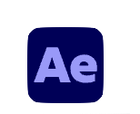
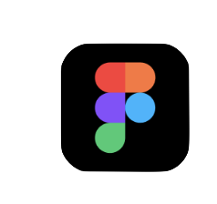

Om Mig
Jeg hedder Sarah, og jeg er multimediedesign-studerende. I tiden efter, jeg blev færdig med min stx, har jeg været hele vejen omkring. Jeg har lavet SoMe content samt taget kursusser i dette fag. Efterfølgende bidrog jeg med frivilligt arbejde i Røde Kors Byggegenbrug, og Tinderbox Festival i Odense. I frivilligt arbejde har jeg lært at gøre en forskel, og at samarbejde er utroligt vigtigt. Jeg er passioneret omkring kreativitet, og meget optaget af bæredygtighed. Det er en vigtig del af mig, og vide at jeg gør en forskel hver eneste dag. Ingen er perfekte, og alle laver fejl, men jeg tror på at hvis vi løfter i flok, kan vi gøre en stor forskel. Jeg vil hellere lære af mine fejl, end ikke at lære noget nyt. Dette gælder også i min passion for digital design, og visuel kommunikation. Jeg er klar på nye udfordringer, hvor vi er et team, som løfter i flok og ikke er bange for at lære af vores fejl. Lad os skabe noget kreativt sammen.
Designværktøjer

